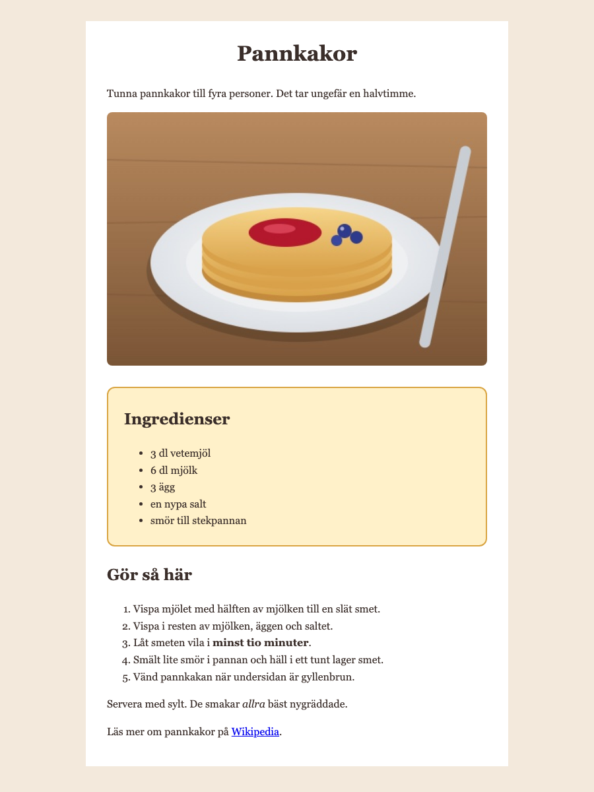

Övning T5 · Lådan
Läs så här: Välj en nivå per etapp: 🟢 Grön ger dig varje steg, 🔵 Blå säger vad som behövs men inte koden, 🔴 Röd ger bara kravet. Etapperna är desamma på alla nivåer, så du kan byta nivå mellan etapperna (och mitt i om du fastnar). Varje etapp slutar med Så vet du att etappen är klar: kontrollera den innan du går vidare. Längst ner finns Vanliga fel och, om du vill ha mer, ⚫ Svart.
Du bygger: pannkaksreceptet från förra veckan, nu som ett vitt receptkort mitt på en beige bakgrund. Kortet blir aldrig bredare än att raderna går att läsa, ingredienserna hamnar i en gul ruta med rundade hörn, och det blir luft mellan delarna. Allt det bygger på lådmodellen: att varje element på sidan är en rektangulär låda med innehåll, luft innanför, en kant och luft utanför.

Du behöver: mappen ovningar, öppen i VS Code, och Live Server. Mappen t5-start, som ligger som zip-fil bredvid den här övningen i Learnpoint. Klipp 5 och 6 sedda. Övning T4 är bra att ha gjort, men inte nödvändig.
Paletten:
| Färg | Hex-kod | Används till |
|---|---|---|
| mörkbrun | #3a2e2a | text |
| beige | #f3e9dc | bakgrund runt kortet |
| vit | #ffffff | receptkortet |
| smörgul | #fff1c9 | rutan runt ingredienserna |
| guld | #d9a441 | rutans kant |
Etapp 1 · Stilmallen och första raden
Varför: varje stilmall börjar likadant, med en länk från sidan och raden som gör att bredder blir som du skriver dem.
🟢 Grön · Steg för steg
- Hämta
t5-start.zipfrån Learnpoint och packa upp den (Mac: dubbelklicka; Windows: högerklicka, Extrahera alla). Dra mappent5-starttill OVNINGAR i filpanelen i VS Code. - Öppna
t5-start/recipe.htmlmed Live Server (högerklicka, Open with Live Server). - Högerklicka på mappen
t5-starti filpanelen, välj New File… och skapastyle.css. Skriv:
/* Pannkakor: lådan */
* {
box-sizing: border-box;
}
body {
font-family: Georgia, serif;
line-height: 1.6;
color: #3a2e2a;
background-color: #f3e9dc;
}- Spara. Öppna
recipe.html, ställ markören i slutet av<title>-raden, tryck Enter och skriv:
<link rel="stylesheet" href="style.css" />- Spara och titta i Chrome.
* { box-sizing: border-box; } är raden vi alltid börjar med, så att bredden du anger är bredden du får. Utan den läggs luften innanför kanten och själva kanten till bredden, så att en låda som ska vara 640 pixlar bred blir bredare. * väljer alla element.
🔵 Blå · Med ledtrådar
- Packa upp
t5-start.zip, läggt5-startiovningaroch öppnarecipe.htmlmed Live Server. - Skapa
style.cssit5-start: en kommentar om vad filen är, box-sizing-raden på*, och en regel förbodymed typsnittetGeorgia, serif, radavståndet1.6, textfärgen och bakgrundsfärgen ur paletten. - Länka stilmallen i
<head>medlink(relochhref).
🔴 Röd · Bara kravet
En länkad style.css som börjar med box-sizing-raden. Sidan har Georgia (med reservtypsnitt), radavståndet 1,6, mörkbrun text och beige bakgrund.
Etapp 2 · Maxbredd och centrering
Varför: rader som går över hela skärmen är svåra att läsa, så innehållet får en största bredd och läggs i mitten.
🟢 Grön · Steg för steg
- I
style.css, efterbody-regeln och en tom rad, skriv:
main {
max-width: 40rem;
margin: 0 auto;
padding: 24px 32px;
background-color: #ffffff;
}- Spara och titta i Chrome. Gör sedan Chrome-fönstret smalare och bredare genom att dra i fönstrets kant.
Allt innehåll på sidan ligger i <main>, så den här regeln gör hela receptet till ett vitt kort.
max-widthär den största bredd elementet får ha.40remär 40 gånger 16 = 640 pixlar. I ett smalt fönster blir kortet smalare, men aldrig bredare än 640. (widthskulle i stället låsa bredden, även när fönstret är smalare.)marginär luften utanför lådan. Med två värden gäller det första uppe och nere och det andra till höger och vänster.autobetyder "dela det som blir över lika på båda sidor", och det lägger lådan i mitten.paddingär luften innanför lådans kant, mellan kanten och innehållet.24px 32pxär 24 pixlar uppe och nere och 32 pixlar till höger och vänster.pxär pixlar.
🔵 Blå · Med ledtrådar
En regel för main:
max-widthpå40rem(det är 640 pixlar)marginmed två värden:0uppe och nere,autotill höger och vänster, så att lådan hamnar i mittenpaddingmed två värden:24pxuppe och nere,32pxtill höger och vänster- vit bakgrund ur paletten
🔴 Röd · Bara kravet
Receptet ligger i ett vitt kort som är högst 640 pixlar brett (skrivet i rem) och centrerat. Innanför kortets kant är det 24 pixlar luft uppe och nere och 32 till sidorna.
Etapp 3 · Bilden
Varför: bilden ska följa kortets bredd, så att den aldrig sticker ut eller blir för liten.
🟢 Grön · Steg för steg
- Efter
main-regeln, skriv:
img {
width: 100%;
border-radius: 8px;
}- Spara och titta. Gör fönstret smalt och sedan brett igen.
width: 100%betyder "lika bred som utrymmet innanför den låda bilden ligger i", alltså kortets bredd utan dess padding.%räknas alltid från lådan runt omkring.border-radiusrundar hörnen. Ju större värde, desto rundare.
🔵 Blå · Med ledtrådar
En regel för img: bredden 100% (räknas från lådan bilden ligger i) och rundade hörn med border-radius på 8px.
🔴 Röd · Bara kravet
Bilden är alltid exakt så bred som kortets innehåll och har lätt rundade hörn (8 pixlar).
Etapp 4 · Rutan runt ingredienserna
Varför: en klass låter dig ge ett enda element ett eget utseende, och rutan visar lådmodellens alla delar på en gång.
🟢 Grön · Steg för steg
- Öppna
recipe.html. Hitta den första<section>, den som innehåller rubriken Ingredienser. Lägg till attributetclassså att raden blir:
<section class="ingredients">- Spara. I
style.css, sist i filen efter en tom rad, skriv:
.ingredients {
padding: 8px 24px;
background-color: #fff1c9;
border: 2px solid #d9a441;
border-radius: 12px;
}- Spara och titta.
class="ingredients"är en klass: ett namn som du själv hittar på och sätter på ett element i HTML. Klasser döper vi på engelska, som alla namn i koden, medan texten på sidan är på svenska. I CSS väljer du elementet med en punkt före namnet,.ingredients. Punkten står bara i CSS, aldrig iclass-attributet. Andrasectionpå sidan påverkas inte.borderär lådans kant, med tre värden: tjocklek (2px), stil (solid, en hel linje) och färg.padding: 8px 24pxger luft mellan kanten och texten i rutan.
🔵 Blå · Med ledtrådar
- Ge den
sectionsom innehåller ingredienserna klasseningredients(attributetclassi HTML). - En regel med klasselektorn
.ingredients(punkt före namnet):paddingmed två värden:8pxuppe och nere,24pxtill sidorna- smörgul bakgrund ur paletten
bordermed tre värden:2px, stilensolidoch guldfärgen ur palettenborder-radiuspå12px
🔴 Röd · Bara kravet
Ingredienserna, med sin rubrik, ligger i en smörgul ruta med en 2 pixlar tjock guldkant och rundade hörn (12 pixlar). Rutan har 8 pixlar luft innanför kanten uppe och nere och 24 till sidorna. Bara ingredienserna får rutan, inte stegen.
Etapp 5 · Luft mellan delarna
Varför: margin skapar avstånd mellan lådor, och det är det som gör att en sida känns lugn.
🟢 Grön · Steg för steg
- I
main-regeln: ändramargin: 0 auto;till
margin: 32px auto;- Lägg till en rad först i
.ingredients-regeln:
.ingredients {
margin: 24px 0;
padding: 8px 24px;
background-color: #fff1c9;
border: 2px solid #d9a441;
border-radius: 12px;
}- Efter
main-regeln, föreimg-regeln, skriv:
h1 {
margin-top: 0;
text-align: center;
}- Spara och titta.
margin: 32px autoger kortet 32 pixlar beige luft ovanför och under, och behållerautotill sidorna, så att det fortfarande ligger i mitten.margin: 24px 0ger rutan 24 pixlar luft ovanför och under, och ingen till sidorna.margin-topär bara luften ovanför. Rubriker har luft ovanför från början;0tar bort den, så att rubriken inte hamnar långt ner i kortet.text-align: centercentrerar texten inuti elementet. Det är något annat änmargin: 0 auto, som flyttar hela lådan.
Hela style.css ser nu ut så här:
/* Pannkakor: lådan */
* {
box-sizing: border-box;
}
body {
font-family: Georgia, serif;
line-height: 1.6;
color: #3a2e2a;
background-color: #f3e9dc;
}
main {
max-width: 40rem;
margin: 32px auto;
padding: 24px 32px;
background-color: #ffffff;
}
h1 {
margin-top: 0;
text-align: center;
}
img {
width: 100%;
border-radius: 8px;
}
.ingredients {
margin: 24px 0;
padding: 8px 24px;
background-color: #fff1c9;
border: 2px solid #d9a441;
border-radius: 12px;
}🔵 Blå · Med ledtrådar
- Kortet (
main): 32 pixlarmarginovanför och under, men fortfarandeautotill sidorna. - Rutan (
.ingredients): 24 pixlarmarginovanför och under,0till sidorna. - En regel för
h1: ingen luft ovanför (margin-top) och texten centrerad (text-align).
🔴 Röd · Bara kravet
Kortet har 32 pixlar beige luft ovanför och under och ligger kvar i mitten. Rutan har 24 pixlar luft ovanför och under. Huvudrubriken är centrerad och har ingen luft ovanför. Sidan ser ut som slutbilden överst.
Etapp 6 · Lådmodellen i DevTools
Varför: DevTools ritar upp lådmodellen för varje element, med siffror, och det är där du ser varför något ligger där det ligger.
🟢 Grön · Steg för steg
- Gör Chrome-fönstret brett, så att det är beige på båda sidor om kortet.
- Högerklicka i den gula rutan, bredvid en ingrediens, och välj Inspektera. I Elements: klicka på raden
<section class="ingredients">(en bit upp), så att den är markerad. - Klicka på fliken Computed bredvid Styles. Överst finns en figur med fyra lådor i varandra: ytterst margin, sedan border, padding och innerst innehållet med två mått.
- Läs av: margin 24 uppe och nere och
-(noll) på sidorna, border 2 runt om, padding 8 uppe och nere och 24 på sidorna. Innehållet är 524 pixlar brett. - Håll pekaren över de olika lådorna i figuren. Samma del markeras i färg på sidan: margin i orange, padding i grönt, innehållet i blått.
- Räkna efter: kortet är 640 brett, minus 32 padding på varje sida blir 576, och det är rutans bredd. Minus 2 + 2 i kant och 24 + 24 i padding blir 524.
- Gå tillbaka till Styles, klicka på värdet
8px 24pxi.ingredientsoch skriv40px. Titta på sidan och i figuren under Computed. Ladda om sidan för att ta bort ändringen.
🔵 Blå · Med ledtrådar
Markera <section class="ingredients"> i Elements och öppna fliken Computed. Läs av margin, border, padding och innehållets bredd i figuren, och håll pekaren över delarna för att se dem på sidan. Förklara innehållets bredd utifrån kortets max-width och de två padding och border som ligger utanför innehållet. Prova ett annat värde på padding i Styles.
🔴 Röd · Bara kravet
Ta reda på i DevTools hur bred den gula rutans innehåll är, och förklara siffran utifrån kortets maxbredd och lådmodellens delar.
⚫ Svart · Utöka (frivilligt, utan facit)
Sätt /* och */ runt box-sizing-raden, så att den blir en kommentar, och spara. Mät kortet (main) i Computed: hur brett är det nu, och varför? Ta bort kommentaren igen. Ge sedan stegen under Gör så här en egen ruta med en ny klass, men en annan stil: bara en kant på vänster sida. Egenskapen heter border-left och tar samma tre värden som border. Hitta ett avstånd mellan kanten och listan som ser bra ut, och kontrollera i Computed att det blev som du tänkt.
Vanliga fel
- Rutan syns inte alls: klassnamnet stämmer inte mellan HTML och CSS. Jämför tecken för tecken:
class="ingredients"i HTML och.ingredientsi CSS. Punkten ska stå i CSS men inte iclass. Kontrollera också att klassen sitter på<section>och inte på<h2>eller<ul>: då blir rutan bara runt en del. - Kortet ligger inte i mitten, eller är lika brett som fönstret: värdena i
marginstår i fel ordning (auto 0i stället för0 auto), ellermax-widthsaknar enhet (40i stället för40rem). Ett mått utan enhet förstår webbläsaren inte, och den hoppar över deklarationen. I DevTools Styles är den då överstruken. - Inget händer när du sparar stilmallen: stilmallen ligger i fel mapp, ofta direkt i
ovningari stället för it5-start, eller så saknas<link>-raden irecipe.html.style.cssska ligga bredvidrecipe.htmli filpanelen.